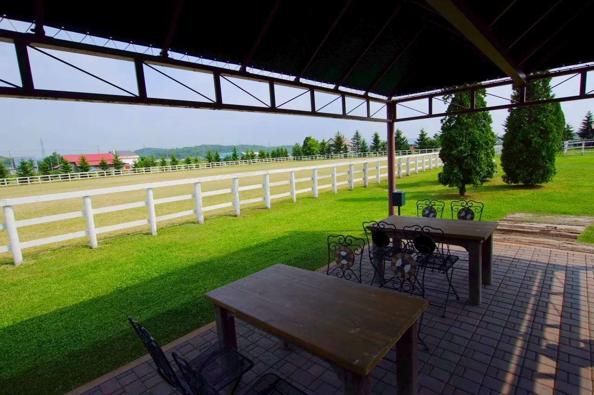
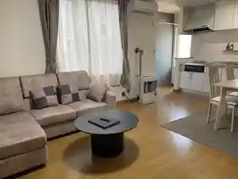
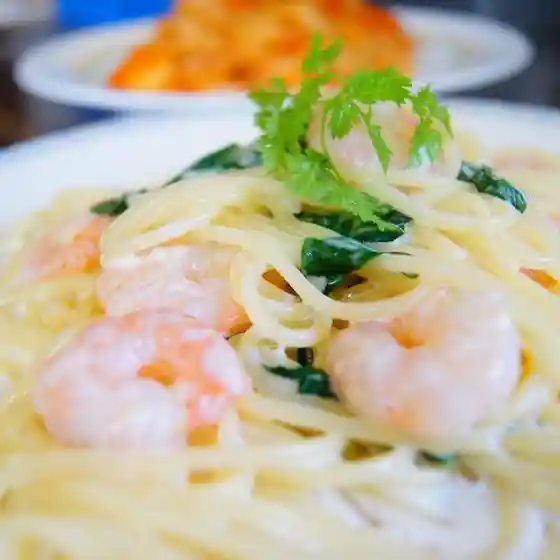
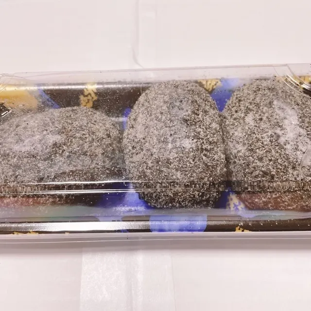
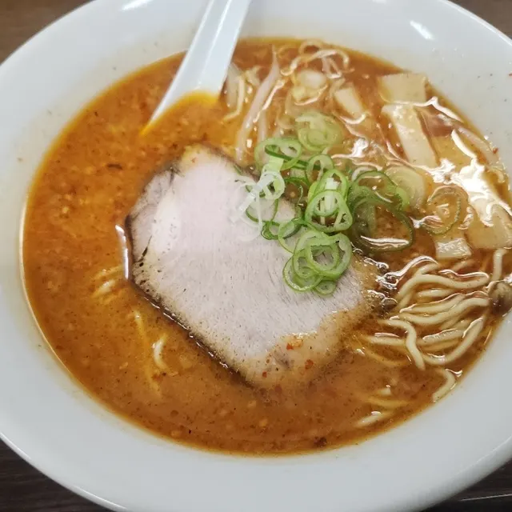
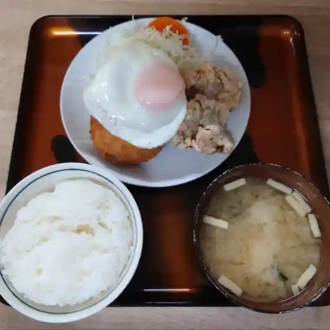
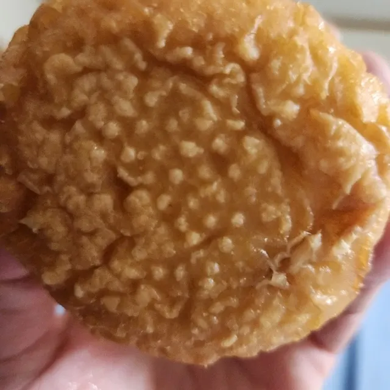
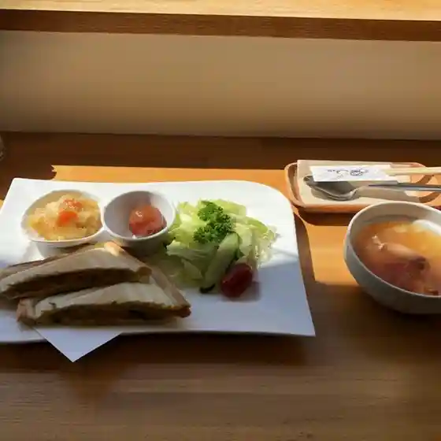
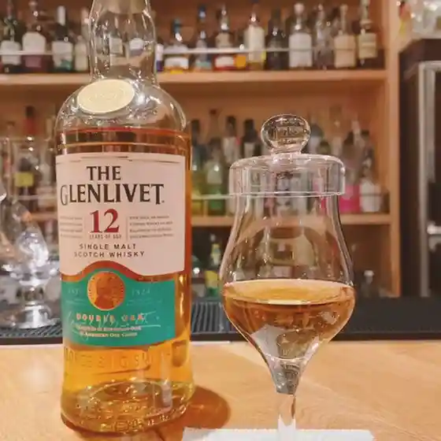
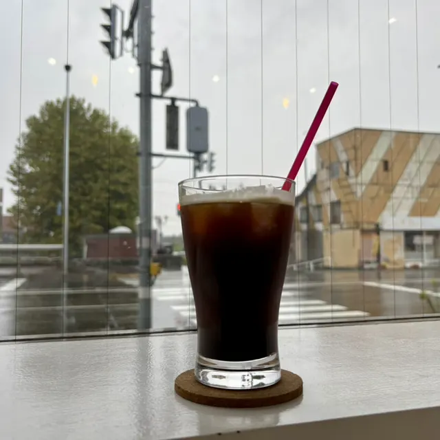

Sunagawa
Sunagawa · Hokkaido
Sunagawa
Highlighted on the Hokkaido map.

Stay
Bon Clair（ボン クレール）

Bon Clair ( Bon Kureeru )
Dining
リヴィスタ

Rivisuta
吉川食品

Yoshikawa Shokuhin
肉の木村

Niku No Kimura
ろく

Roku
セブンイレブン 砂川西1条店

Sebun'Irebun Sunagawa Nishi 1 Jou Mise
Repas

Repas
BAR BASE CAMP

Bar Base Camp
エスプレッソスタンド プラッツ 砂川店

Esupuressosutando Purattsu Sunagawa Mise
なごみ
Nagomi
岩瀬牧場
Iwase Bokujou
魚と酒 やまだ 砂川店
Sakana To Sake Yamada Sunagawa Mise
焼肉キムヨシ
Yakiniku Kimuyoshi
らーめん 虎の介
Raamen Tora No Suke
花いた
Hana Ita
ジンギスカン羊師 砂川店
Jingisukan Hitsuji Shi Sunagawa Mise
MORISHIRO
Morishiro
らー麺 さつき家
Raa Men Satsuki Ie
レストラン石狩
Resutoran Ishikari
山下旅館
Yamashita Ryokan
たまりbar home
Tamari Bar Home
わしの食卓 砂川店
Washino Shokutaku Sunagawa Mise
スーパーアークス 砂川店
Suupaaaakusu Sunagawa Mise
砂川サービスエリア 上り線
Sunagawa Saabisueria Nobori Sen
SABOT
Sabot